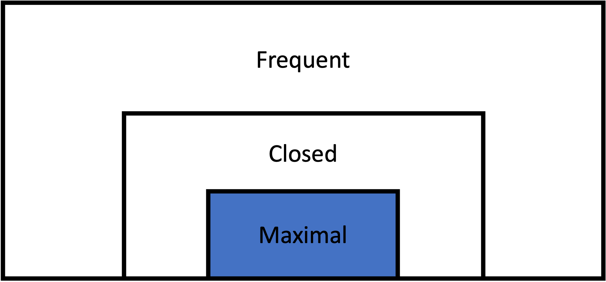

Maximal Itemset Mining

Description
Maximal itemset mining is a set of techniques focused on discovering maximal itemsets in a transactional dataset. A maximal itemset is one which appears frequently in the data (above the minimum support threshold) and which is not a subset of any other frequent itemset.
In other words, maximal itemsets are the largest possible combinations in the dataset of the items that meet a specified frequency threshold. They are a subset of closed itemsets, which in turn are a subset of all frequent itemsets.
The key advantage of mining maximal itemsets is its compact representation of all frequent patterns in the data. By identifying only the maximal frequent itemsets, the number of patterns generated is significantly reduced compared to frequent itemset mining. This approach is particularly valuable when dealing with high-dimensional data or datasets with long transactions.
Formal Definition
Let:
- $I$ be the set of all items in the dataset
- $X$ be an itemset, where $X \subseteq I$
- $D$ be the set of all transactions in the dataset
- $\sigma(X)$ be the support of itemset $X$ in $D$
- $\sigma_{min}$ be the minimum support threshold
Then, an itemset $X$ is a maximal frequent itemset if and only if: 1. The support of $X$ is greater than or equal to the minimum support threshold:
\[\sigma(X) \geq \sigma_{min}\]
2. There does not exist a superset $Y$ of $X$ such that $Y$ is also frequent:
\[\nexists Y \supset X : \sigma(Y) \geq \sigma_{min}\]
Thus, $MFI$, the set of all maximal frequent itemsets in $I$ can be expressed as:
\[MFI = {X \mid X \subseteq I \wedge \sigma(X) \geq \sigma_{min} \wedge \nexists Y \supset X : \sigma(Y) \geq \sigma_{min}}\]
Frequent Itemset Recovery
Maximal itemsets can be used to recover all frequent itemsets by generating combinations from the mined itemset. However, unlike with closed itemsets, recovering the support of the frequent combinations is not possible.
Algorithms
FPMax
The fpmax function implements the FPMax ([F]requent [P]attern Max) algorithm for mining closed itemsets. This algorithm, proposed by Gösta Grahne and Jianfei Zhu in 2005, builds on the FP-Growth alogrithm by mining FP trees to discover maximal itemsets in a dataset. It inherits many of the advantages of FP-Growth when it comes to dense datasets.
RuleMiner.fpmax — Methodfpmax(data::Union{Transactions,FPTree}, min_support::Union{Int,Float64})::DataFrameIdentify maximal frequent itemsets in a transactional dataset or an FP-tree with the FPMax algorithm.
Arguments
data::Union{Transactions,FPTree}: Either aTransactionsobject containing the dataset to mine, or a pre-constructedFPTreeobject.min_support::Union{Int,Float64}: The minimum support threshold. If anInt, it represents the absolute support. If aFloat64, it represents relative support.
Returns
DataFrame: A DataFrame containing the maximal frequent itemsets, with columns:Itemset: The items in the maximal frequent itemset.Support: The relative support of the itemset as a proportion of total transactions.N: The absolute support count of the itemset.Length: The number of items in the itemset.
Description
The FPMax algorithm is an extension of FP-Growth with additional pruning techniques to focus on mining maximal itemsets. The algorithm operates in three main phases:
FP-tree Construction: Builds a compact representation of the dataset, organizing items by their frequency to allow efficient mining. This step is skipped if an FPTree is provided.
Recursive Tree Traversal:
- Processes itemsets from least frequent to most frequent.
- For each item, creates a conditional FP-tree and recursively mines it.
- Uses a depth-first search strategy, exploring longer itemsets before shorter ones.
- Employs pruning techniques to avoid generating non-maximal itemsets.
- Adds an itemset to the candidate set when no frequent superset exists.
Maximality Checking: After the recursive traversal, filters the candidate set to ensure only truly maximal itemsets are included in the final output.
FPMax is particularly efficient for datasets with long transactions or sparse frequent itemsets, as it can significantly reduce the number of generated itemsets compared to algorithms that find all frequent itemsets.
Example
# Using a Transactions object
txns = Txns("transactions.txt", ' ')
result = fpmax(txns, 0.05) # Find maximal frequent itemsets with 5% minimum support
# Using a pre-constructed FPTree
tree = FPTree(txns, 5000) # Construct FP-tree with minimum support of 5000
result = fpmax(tree, 6000) # Find maximal frequent itemsets with minimum support of 6000References
Grahne, Gösta, and Jianfei Zhu. "Fast Algorithms for Frequent Itemset Mining Using FP-Trees." IEEE Transactions on Knowledge and Data Engineering 17, no. 10 (October 2005): 1347–62. https://doi.org/10.1109/TKDE.2005.166.
GenMax
The genmax function implements the GenMax algorithm for mining closed itemsets. This algorithm, proposed by Karam Gouda and Mohammad Zaki in 2005, utilizes a technique called progressive focusing to reduce the search space for maximal itemset mining.
RuleMiner.genmax — Methodgenmax(txns::Transactions, min_support::Union{Int,Float64})::DataFrameIdentify maximal frequent itemsets in a transactional dataset with the GenMax algorithm.
Arguments
txns::Transactions: ATransactionsobject containing the dataset to mine.min_support::Union{Int,Float64}: The minimum support threshold. If anInt, it represents the absolute support. If aFloat64, it represents relative support.
Returns
DataFrame: A DataFrame containing the maximal frequent itemsets, with columns:Itemset: The items in the maximal frequent itemset.Support: The relative support of the itemset as a proportion of total transactions.N: The absolute support count of the itemset.Length: The number of items in the itemset.
Description
The GenMax algorithm finds maximal frequent itemsets, which are frequent itemsets that are not proper subsets of any other frequent itemset. It uses a depth-first search strategy with pruning techniques like progressive focusing to discover these itemsets.
The algorithm proceeds in two main phases:
- Candidate Generation: Uses a depth-first search to generate candidate maximal frequent itemsets.
- Maximality Checking: Ensures that only truly maximal itemsets are retained in the final output.
Example
txns = Txns("transactions.txt", ' ')
# Find maximal frequent itemsets with 5% minimum support
result = genmax(txns, 0.05)
# Find maximal frequent itemsets with minimum 5,000 transactions
result = genmax(txns, 5_000)References
Gouda, Karam, and Mohammed J. Zaki. “GenMax: An Efficient Algorithm for Mining Maximal Frequent Itemsets.” Data Mining and Knowledge Discovery 11, no. 3 (November 1, 2005): 223–42. https://doi.org/10.1007/s10618-005-0002-x.